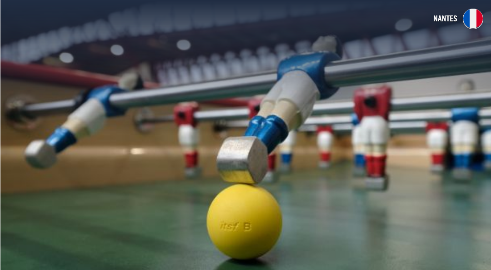

Ceci est une page web indépendante et non-lucrative ayant pour thème le baby-foot. Vous y trouverez diverses informations liées à ce sport, réparties dans de multiples pages annexes accessibles à l'aide des menus déroulants situés en haut de chaque page, vous permettant une navigation facile et fluide.
Amusez-vous !
